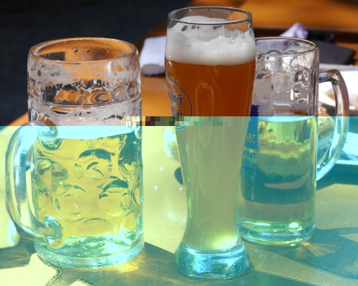
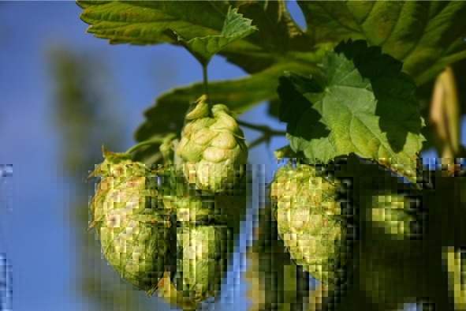
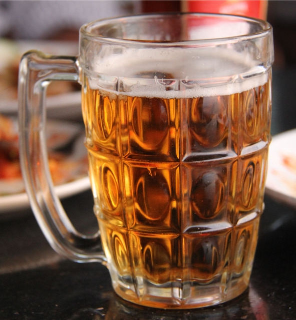
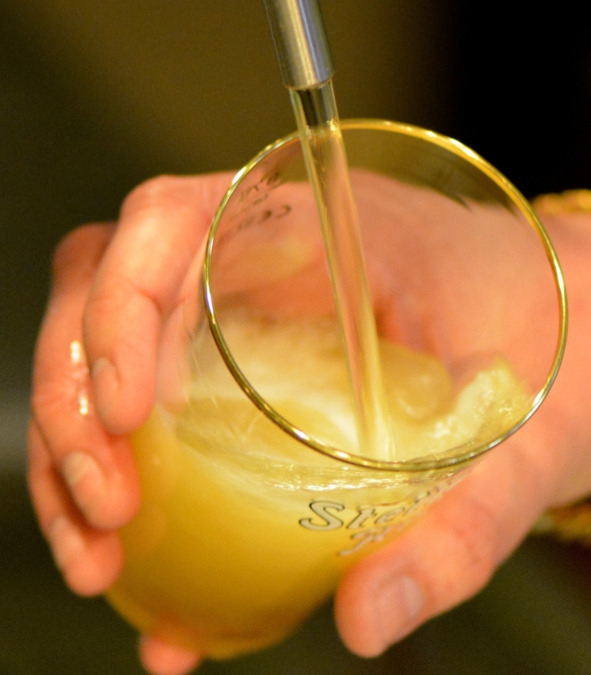

Понятие пива
Пиво – газированный слабоалкогольный напиток крепостью 2—14% (обычно 3—6%) об., изготовляемый методом брожения солодовой браги (чаще всего ячменной) на пивных дрожжах с обязательным добавлением хмеля и возможным внесением других добавок.
Славянское слово «пиво» произошло от глагола «пить» и изначально обозначало любой напиток. Только потом оно закрепилось непосредственно за пивом. Происхождение английского варианта – beer – не установлено. По одной из версий, это слово происходит от латинского biber – «питье, напиток».
Разница между пивом и пивным напитком в РоссииСогласно ГОСТ Р 51174—2009 «Пиво. Общие технические условия», в качестве сырья для производства пива используют воду, солод, хмель, пивные дрожжи, несоложеные злаки и сахар. Если в составе есть другие добавки, например цитрусовая цедра, то такая продукция должна именоваться «пивной напиток», а не пиво, поскольку не соответствует российским стандартам. Кроме требований по составу пиво еще должно попадать в ограничения по крепости: содержание этилового спирта в сброженном продукте не может превышать 7% об.
При этом пивной напиток не обязательно хуже пива – он просто не соответствует «классическому» определению, при том что на деле может быть вкуснее, качественнее и даже полезнее. Такие всемирно известные марки пива, как «Гиннесс» и «Хугарден», в России продаются как «пивной напиток».
Краткая история пиваПиво смело можно назвать самым древним алкогольным напитком. Варили его все народы на всех континентах. Известно, что когда конкистадоры впервые высадились на берегах Южной Америки, индейцы угостили их местным аналогом пива – чучей. Своеобразное банановое пиво варили первобытные племена Африки. А уж Европа с Азией по количеству сортов были впереди всей планеты. Правда, то, что называли пивом наши далекие предки, ни по вкусу, ни по внешнему виду не было похоже на напиток, к которому привыкли мы.
Происхождение пива ученые связывают с колыбелью человечества – Месопотамией. Именно здесь при раскопках археологи нашли датированные VII тысячелетием до н. э. шумерские глиняные таблички с изображением пивоваров, склонившихся над чаном. У шумеров была даже богиня пива Нинкаси Светлоструйная, которой посвящали поэмы. Хмельным в полном смысле слова шумерское пиво назвать нельзя: его варили без хмеля, из ячменя и полбы, добавляя для аромата душистые травы. Крепость составляла 3—4% об.
Наследники шумеров, древние вавилоняне, рецепт пива усовершенствовали: они стали варить его не из ячменной муки, а из солода. Причем борьба за качество напитка шла серьезная. Согласно законам царя Хаммурапи, правившего во II тысячелетии до н. э., трактирщика, завышавшего цены на пиво, следовало утопить. Если же он разбавлял напиток водой, его поили испорченным пивом, пока он не умирал в страшных муках. Смертной казни подлежал и трактирщик, в чьем заведении посетители заводили разговор о политике.
Древние египтяне создали собственные рецепты: кроме ячменного, они стали варить и пшеничное пиво, изобретение которого приписывали верховному божеству Осирису. Пивовары в Египте были в большом почете, а египетский иероглиф, обозначавший «обед», состоял из двух символов: «хлеб» и «пиво».
Брага ОдинаВ далеком северном краю суровые викинги тоже варили пиво. Вместо хмеля они добавляли в состав сосновые и еловые иголки. Получившееся питье содержало витамины B и C, поддерживавшие силы воинов в дальних походах. Скальды называли свое пиво «брагой Одина».
И дружеские пирушки, и ритуальные застолья у викингов сопровождались большими пьянками. Умение много выпить (а еще лучше – перепить соседа) ценилось наравне с воинскими доблестями. В одной из древних саг повествуется об умопомрачении, постигшем короля Сигурда. Признаком безумия сочли плохое настроение и неспособность короля поддерживать веселую беседу во время попойки. Именно викингам мы обязаны традицией наливать внеочередной бокал припозднившемуся гостю. Только у них роль бокалов выполняли огромные турьи рога.
Сумрачный германский генийРимский историк Тацит искренне ужасался тому пойлу, которое пили древние германцы. Местные пивовары и вправду были большими затейниками: то медвежью желчь в питье добавят, то парочку галлюциногенных грибов. Кто бы мог подумать, что результатом этих варварских экспериментов через две тысячи лет станет знаменитое немецкое пиво, одно из лучших в мире!
С принятием христианства в Германии и соседней Фландрии пивоварением всерьез занялись монахи. Дело поставили на широкую ногу. Известны даже случаи сожжения «пивных ведьм» – женщин, якобы испортивших монастырское пиво. До сих пор лучшими сортами голландского пива считаются те, рецепты которых появились в монастырях, – так называемое «траппистское пиво».
Постепенно и обычные горожане оценили выгоду пивоварения. В средние века в городах появились гильдии пивоваров. В одном только Гамбурге к концу XV века насчитывалось около 600 пивоварен. Своим покровителем немецкие пивовары считали мифического фламандского короля Гамбринуса. Прототипом этого персонажа был сиятельный гуляка герцог Брабантский Ян Первый (Примус). Это отважный воин, одержавший немало побед в войнах и турнирах. Но пиво он любил особо.
Однажды гильдия пивоваров Брюсселя решила выбрать старшину. На городской площади поставили бочку с пивом, а честному народу объяснили, что старшиной станет тот, кто отнесет эту бочку на край площади. Первые городские силачи не смогли поднять тяжесть и, устыдившись, отступились. И тогда его светлость господин герцог открыл кран и выпил всю бочку, а затем легко перенес ее в условленное место. За этот подвиг гильдия пивоваров единогласно провозгласила его своим старшиной. Однако, как гласит легенда, во время празднования этого события все участники напились так, что уже не могли правильно произнести имя нового старшины, а потому называли его Гамбринусом. Герцог Ян Примус погиб в 1294 году на турнире. Ему было 33 года, это был его 76 турнир. Но слава великого любителя пива не померкла в веках. Один из лучших сортов чешского пива назван в его честь.
Напиток настоящих джентльменовПиво в Англии любили всегда: и до норманнского завоевания, и после. Еще в VII веке одному из королей Кента пришлось издать указ против повального пьянства. Но пенный напиток продолжали пить и в замках, и в аббатствах, и в хижинах вилланов. В те времена эль имел сладковатый вкус: в него добавляли мед и немного вереска. Только с XV века англичане в полной мере оценили благородную горчинку хмеля.
Английский король Генрих VIII за завтраком выпивал галлон (около 4,5 л) пива. Не отставали от него и придворные. А его дочь Елизавета I, объезжая владения, первым делом узнавала, вкусное ли пиво варят в городе, который она намеревалась посетить. Если пиво было невкусным, то любимый напиток королевы везли из Лондона.
В XV – XVI веках в Англии появилась профессия дегустатора пива. Этот человек носил кожаные штаны. Перед тем как попробовать напиток, он выливал немного пива на скамью, садился в лужицу и начинал неспешно смаковать из бокала. Через определенное время дегустатор вставал. Если штаны прилипали к лавке, значит, пиво было некачественным, с добавлением сахара. В XVI веке англичане стали разливать пиво в бутылки. А к XIX веку его производство максимально механизировали, пивоварение стало прибыльной статьей экспорта.
История пива на Руси и в РоссииКняжеские пиры проходили именно так, как описал их Пушкин в бессмертных строках «Руслана и Людмилы». Вот только пиво, что лилось рекой на подобных пиршествах, было медовым. Пасек тогда не было, а профессия бортника – человека, добывавшего дикий мед, – была трудна и опасна. Поэтому простому люду приходилось зачастую довольствоваться пивом без меда. Чтобы улучшить его вкус, в него стали добавлять хмель. Отечественные ученые считают, что именно Киевская Русь научила Европу варить пиво с хмелем. Пиво было почти стратегическим товаром. В летописях зафиксированы случаи, когда крестьяне платили оброк медом, хмелем и солодом.
Любили пиво и русские цари. Очень много для его популяризации сделал Петр I, который приказал ввести пиво в рацион солдат как лучшее средство от цинги (для живого пива это утверждение справедливо). Сам император любил напиток, сваренный по голландскому рецепту. Императрица Елизавета I, напротив, отдавала предпочтение английским сортам: элю и портеру. Вплоть до конца XVIII века пиво для русских царей варилось на придворных пивоварнях.
В 1795 году, в правление Екатерины II, А. Ф. Крон построил в Петербурге завод Александра Невского, а П. Казалет примерно тогда же создал Калинкинский пивзавод. В 1848 году эти заводы объединились, а в 1923 году объединенному производству было присвоено имя Степана Разина. В 1875 году построен московский Трехгорный пивоваренный завод, ныне – «Бадаевский».
Появление «Жигулевского» пиваИзначально термин «Жигулевское пиво» использовался для обозначения не конкретного сорта, а всей продукции Жигулевского пивоваренного завода в Самаре, основанного австрийским предпринимателем в 1881 году. Сам же легендарный напиток в те времена носил название «Венское пиво». В конце XIX века никто не предполагал, что несколько десятков лет спустя на долю этого сорта будет приходиться 80% всего потребления пива в СССР.
Доподлинно неизвестно, как «Венское» пиво стало «Жигулевским», однако на этот счет есть две легенды:
– в 1934 году производство посетил кто-то из партийных бонз (вероятно, Микоян) и выразил недовольство иностранным названием такого вкусного и всенародно любимого пива;
– «Венское» победило во всесоюзном конкурсе и в честь этого получило почетное переименование.
Как бы то ни было, официальная история «Жигулевского» пива отсчитывается с 1935 года. Справедливости ради надо сказать, что в то же время на рынке появилась и другая продукция Самарского пивзавода: сорта «Украинское» (бывшее «Мюнхенское»), «Рижское» (бывшее «Пильзенское»), «Московское», «Русское» и другие, но они не стали так популярны и известны.
История завода полна взлетов и падений: в 1914 году, на самом пике популярности и успеха, производство пришлось законсервировать из-за вступившего в силу «сухого закона», а в 1918 году пивзавод национализировали власти Советского Союза.
Само слово «Жигули» обозначает горный кряж на берегу Волги недалеко от Самары. В честь этой возвышенности названо не только пиво, но и марка советского (а потом – российского) автомобиля. Что касается этимологии названия, то Жигулевскими горы стали называться только после географической реформы Екатерины II, до этого они были Шелехметскими или Девичьими. Судя по всему, новое название позаимствовали у небольшого села Жигули. А вот деревне имя дал, вероятно, один из обитателей по прозвищу Жегуля, то есть «хитрый, вертлявый человек».
В 1938 году был введен единый ГОСТ на производство «Жигулевского», поэтому, несмотря на то что знаменитое пиво изготавливалось на более чем 700 предприятиях, его вкус оставался неизменным. Технология предполагала использование четырех основных компонентов: воды, ячменного солода, ячменя и хмеля (175—200 г на 1 л пива), однако допускалось незначительное (до 15%) содержание несоложеных добавок: кукурузы, пшеницы, рисовой сечки. По стандартам того времени плотность сусла должна была составлять минимум 11%, а крепость готового напитка – не менее 2,8% об. В результате получалось светлое пиво низового брожения.
В 1987 году на рынке появился сорт «Специальное „Жигулевское“», рецептура которого регламентировалась не ГОСТом, а ТУ. После распада СССР установленный государством стандарт был снят. В 1992 году Самарский пивзавод предпринимал попытки зарегистрировать товарный знак «Жигулевское», но распространенность имени оказалась настолько велика, что уже в 2000 году регистрация ТЗ была отменена решением суда. Сегодня «Жигулевское» можно заслуженно назвать народной маркой.
В России и странах СНГ существует множество «Жигулевских», но зачастую эти сорта кроме названия не имеют ничего общего с классической рецептурой. Крепость такого пива легко варьируется от 3 до 7,2% об., а плотность сусла – от 8 до 16%. Из-за отсутствия стандартизации и одного владельца марка постепенно «вырождается».
Технология производства пиваПриготовление пива – один из самых сложных технологических процессов в пищевой промышленности. Для получения напитка высокого качества пивоварам нужно учитывать множество нюансов и тщательно подбирать ингредиенты.
Ингредиенты:
– солод – продукт, получаемый путем проращивания злаков. Для изготовления пива используется ячмень, прошедший соложение, – процесс, способствующий прорастанию зерна. После замачивания ячмень разбухает, внутри зерен начинаются химические реакции, расщепляющие крахмал на нужный для брожения солодовый сахар;
– вода – в пивоварении воду различают по составу и концентрации солей. Для некоторых сортов пива лучше подходит «жесткая» вода (с высоким содержанием солей), например, для мюнхенского. Есть сорта, сделанные исключительно на воде с низким содержанием солей, это пльзеньское пиво. Современные технологии позволяют регулировать концентрацию солей в воде с очень высокой долей точности, что упрощает производство;
– хмель – придает пиву характерный горький вкус, душистый аромат и отвечает за пенообразование. Заменить хмель в производстве пива без потери качества невозможно. Это уникальное растение, в состав которого входит более 200 веществ, отвечающих за вкус. Интересно, что для пива годятся только шишки женских растений хмеля;

Шишки хмеля – главное отличие пива от солодовой браги
– дрожжи – используют пивные дрожжи семейства Saccharomycetaceae, которые не встречаются в природе, а выведены искусственно специально для пивоварения. В зависимости от технологии брожения в производстве пива участвуют два вида дрожжей: верхового брожения (Saccharomycetaceae cerevisiae), подходят для таких видов пива, как портер, эль и стаут, а также низового брожения (Saccharomycetaceae carlsbergensis) – применяются при изготовлении лагерного и среднеевропейского пива. Разница между этими видами пивных дрожжей в том, что на окончательной стадии дрожжи верхового брожения собираются на поверхности (всплывают), а низового – на дне сусла. Это влияет на вкус.
Этапы производства пива1. Приготовление сусла. Вначале ячменный солод дробят, но зерна не должны превратиться в однородную массу. В составе сусла обязательны большие и мелкие крупинки. Это называется солодовым помолом. В разных сортах пива соотношение крупных и мелких частиц отличается.
Затем солодовый помол смешивают с водой. Этот процесс называется «затиранием», а полученная смесь – затором. При добавлении воды ферменты в зерне начинают расщеплять крахмал на солодовый сахар. Для ускорения ферментации пивовары нагревают затор до температуры 76° C.
Далее готовое сусло фильтруют. Проваренный затор переливают из котла в специальное сито, закрытое снизу. В таком состоянии затертый солод находится некоторое время, пока на дне не осядут твердые частицы, называемые дробиной. Когда сито открывают, сквозь него и слой дробины начинает просачиваться чистое жидкое сусло, которое собирается в специальном котле для последующего варения.
2. Варка сусла. Полученное на предыдущем этапе сусло нагревают, доводят до кипения и добавляют хмель. Количество шишек зависит от сорта пива и предпочтений мастера. В каждой рецептуре используется разное количество хмеля. Варка сусла занимает 2—3 часа. В ходе этого процесса погибают все микроорганизмы и разрушаются ферменты, поэтому дальнейшие химические реакции невозможны. Пивовары добиваются наперед установленной плотности начального сусла, которое на этикетке готового продукта обозначается как плотность пива.
Далее сваренное сусло фильтруют от остатков хмеля и дают отстояться. На дне выпадают мельчайшие частички, которые не удалось отфильтровать на предыдущем этапе. Также на некоторых заводах ускоряют удаление нежелательных остатков центрифугой.
3. Брожение. Чистое сусло поступает через трубы на дно бродильных чанов, называемых цилиндроконическими танками. После того как жидкость остынет до нужной температуры, в чан добавляют дрожжи. Для пива верхового брожения перед добавлением дрожжей сусло охлаждают до 18—22° C, для пива низового брожения – до 5—10° C.
Спустя сутки после закладки дрожжей на поверхности бродильного чана появляется толстый слой пены. Это значит, что дрожжи успешно начали превращать сахар в углекислый газ и спирт. В ходе брожения выделяется много тепла, поэтому сусло нуждается в постоянном охлаждении, температура должна быть стабильной.
На этапе брожения пивовары следят за концентрацией углекислоты в чанах. При достижении максимально допустимого уровня газ отводят по специальным трубам. Брожение останавливается после того, как дрожжи переработают весь сахар на спирт.
4. Созревание. На предыдущих этапах получилось молодое нефильтрованное пиво, требующее дальнейшего созревания (не касается пшеничных сортов). Для созревания используют большие емкости из нержавеющей стали, а сам процесс длится от нескольких недель до четырех месяцев.
Во время созревания нужно поддерживать стабильную температуру и давление в емкостях, колебания недопустимы. На современных предприятиях технологический процесс контролирует специальное оборудование, способное автоматически изменить температуру и давление.
5. Фильтрация. После созревания пиво проходит еще одну фильтрацию двумя разными фильтрами, предназначенными для очистки от крупных и мелких частиц, а также остатков дрожжей. После этого пенный напиток становится абсолютно прозрачным и готовым к розливу.
6. Розлив. На заключительном этапе производства пиво переливают в тару разных видов. Перед розливом бутылки, кеги или бочонки моют, затем удаляют попавший внутрь воздух. Пиво является скоропортящимся алкогольным напитком, требующим стерильных условий. Без стерильности срок годности готового продукта составляет лишь пару дней. При розливе в стеклянную тару пиво часто пастеризуют, что существенно продлевает срок хранения.
Международная методика измерения горечи
Пиво может быть горьким из-за нарушения технологии производства (скисания), слишком высокой крепости (содержания спирта) и применения специального жженого солода. Однако в подавляющем большинстве случаев горечь пива зависит от использующегося хмеля (одного или нескольких сортов). На данный момент самой популярной методикой расчета является Международная шкала горечи (International Bitterness Units) – IBU, которая актуальна как для профессионального, так и любительского пивоварения.
Чем выше альфа-кислотность хмеля, длительнее варка и ниже начальная плотность сусла, тем больше в итоге получится горечь пива. Обычно горькие сорта хмеля добавляют вначале и варят 50—70 минут, а сорта, дающие аромат, – за 5—10 минут до конца варки.
IBU имеет шкалу от 0 до 100 (в одной из версий 120) и указывает на концентрацию в пиве горьких кислот, а точнее, миллионных долей (ppm). Сам по себе этот показатель малоинформативен и не дает представления о вкусе пива в целом, а лишь выражает числовое значение горечи для сравнения с другими сортами пива. Например, большинство американских лагеров имеют горечь до 12 IBU, «Балтика №3» – 8—15 IBU, а Guinness – 45 IBU.
Основные виды и сорта пиваВ мире не существует единой классификации пива, из-за чего возникает путаница. В первую очередь нужно уметь отличать виды от сортов. Сорт определяет способ брожения (верховой или низовой) и сырье (ячменный, пшеничный или другой солод), а вид – цвет и характерные особенности технологии производства.
Виды пиваВиды пива по цвету:
– Светлое – варится из светлого (непрожаренного) солода, вследствие чего имеет желтоватый оттенок. Отличается ярко выраженным хмелевым ароматом и стойкой горечью. Именно светлые виды пива наиболее популярны в России, на них приходится около 90% продаж. Известные марки: Carlsberg, Pilsner Urquell, Staropramen, Leffe, «Жигулевское», «Балтика», «Бочкарев» и «Клинское».
– Темное – традиционное баварское черное пиво (Schwarzbier) низового брожения, имеющее темно-коричневый или черный цвет. Секрет приготовления заключается в использовании прожаренного солода. Но солод нельзя пережаривать, иначе в напитке появится сильный запах или же вкус горелого ячменя. Это некрепкое пиво с умеренной хмельной горечью и характерным дымным привкусом. Известные марки: Guinness, Budweiser Budvar Tmavy Lezak, Krusovice Cerne, Kloster Schwarz Bier.
Виды пива по технологии производства:
– Живое – изготовляется на основе живой культуры пивных дрожжей. В производстве не используются консерванты и пастеризация – нагревание пива до температуры 80—85° C с целью уничтожить находящиеся в нем микроорганизмы. Характерная особенность живого пива – непродолжительный срок хранения. Его нужно выпить в течение нескольких дней. Из-за особенностей производства живое пиво не может продаваться в бутылках, только в бочках на разлив. Его лучше покупать в магазинах возле пивзаводов.
– Фильтрованное – светлое пиво, из которого удалены осадок и остатки продуктов брожения. Фильтрованное пиво имеет прозрачный яркий цвет, но считается менее полезным, так как фильтрация удаляет большую часть активных веществ.
– Нефильтрованное – технология производства без фильтрации, вследствие чего на дне бутылки может накапливаться осадок. От живого пива отличается тем, что для продления срока хранения его пастеризуют и добавляют в состав консерванты. Польза нефильтрованного пива зависит от применяемых консервантов, многие из них являются канцерогенными веществами.
– Безалкогольное (крепость 0,2—1% об.) – пиво с минимальным содержанием спирта, которое варят по традиционной технологии, но потом фильтруют от спирта. Ни один современный метод фильтрации не может полностью исключить спирт. Но правильно очищенное безалкогольное пиво содержит меньше спирта, чем даже квас. Из-за отсутствия алкоголя вкус отличается от других видов, поэтому многие ценители пренебрежительно относятся к безалкогольному пиву. Кроме того, сложная технология очистки существенно удорожает производство, поэтому цена на безалкогольное пиво зачастую выше, чем на другие сорта.
Разница между фильтрованным и нефильтрованным пивом показана в таблице.
Сорта пива
В зависимости от способа брожения все традиционные сорта пива делят эль и лагер.
Эль (с индоевропейского языка переводится как «опьянение») – сорт пива, отличающийся тонким фруктовым привкусом и высоким содержанием спирта (3—12% об.). Первые рецепты появились в Англии в XV веке, но аналоги эля изготавливали еще древние шумеры за несколько веков до нашей эры. В Средневековье напиток относился к продуктам первой необходимости. В отличие от молока он не портился и не нуждался в особых условиях хранения. Благодаря высокой калорийности кружка эля заменяла порцию хлеба.
Особенности. От обычного пива классический эль отличается отсутствием хмеля в рецептуре. Благодаря этому он готовится быстрее и узнается по выраженному сладковатому оттенку. Вкусовой букет формируется травами и специями, которые вывариваются в сусле вместо хмеля. Готовый продукт не подвергают дальнейшей пастеризации или фильтрованию. Современные пивовары зачастую пренебрегают древними традициями, добавляя в состав эля хмель, чтобы их продукт мог называться пивом.
Еще одно принципиальное отличие эля от другого пива – технология производства. Эль готовят методом верхового брожения при температуре 15—24° C. Дрожжи не опускаются вниз при настаивании, как у большинства других видов пива, а держатся сверху, образуя пенную шапку. При верховом брожении появляется много эфиров и высших спиртов, которые формируют выраженный вкус и специфический аромат. Заключительный этап – выдержка и дозревание эля в прохладном помещении с температурой 11—12° C. В среднем на получение свежей порции требуется около четырех недель – это быстрые сорта, которые чаще всего предлагают в питейных заведениях. Но есть разновидности, на создание которых уходит около четырех месяцев.
Виды эля. Британский и ирландский эль классифицируют в зависимости от цвета, привкуса, аромата, используемых добавок в закваску. Разновидностей довольно много, поэтому назовем лишь самые распространенные:
– Ячменный (Barley Wine) – отличается повышенным содержанием спирта (8,5—12% об.) и высокой плотностью сусла – 22,5—30%. Этот эль еще называют «ячменными вином». Фруктовый аромат в сочетании с приятной солодовой горечью придает напитку неповторимый вкус. Цвет «Барли Вайн» – темный с оттенком золота и меди. Подают ячменный эль в винном бокале. Напиток хорошо хранится, после выдержки становится мягче.
– Пшеничный (Weizen Weisse) – светлый эль с умеренным фруктовым и цветочным ароматом. Иногда ощущается пшеничный оттенок в виде запаха свежего хлеба. Отличается светло-соломенным или темно-золотистым цветом.
– Портер (Porter) – изначально создавался для людей, занятых тяжелым физическим трудом. Его полное название – Porter’s ale, «эль для портовиков». Отличается большим количеством добавок, среди которых специи, травы, различные ароматические вещества. Цвет портера меняется в зависимости от используемых добавок и может быть светлым, золотистым и даже темным. В приготовлении используют несколько видов солода, что позволяет варьировать вкусовые оттенки. Крепость – 4,5—7% об.
– Стаут (Stout) – темный потомок портера. При изготовлении используют жженый солод, что придает насыщенный цвет и легкий намек на кофейные нотки. Долгое время именно этот вид эля считали полезным, его рекомендовали беременным и кормящим.
– Белый (Weisse) – легкий сорт с кисловатым привкусом. Очень популярен в Германии, за что и получил неофициальное название «Берлинский». Есть небольшой фруктовый акцент, который усиливается с возрастом. Цвет – светло-соломенный. В некоторых немецких пабах подается с сахарным сиропом.
– Горький (Bitter) – по праву считается национальным сортом английского эля. Несмотря на название, не является таким уж горьким, если сравнивать с остальными сортами. В производстве используют хмель, который на фоне полного отсутствия сахара отвечает за характерный вкус. Палитра цветов разнообразна и варьируется от светло-желтого до темной меди. Крепость – 3—6,5% об.
– Ламбик (Lambic) – считается традиционно бельгийским элем, в который добавляют ягоды малины и вишни, что придает характерный вкус и красноватый оттенок.
– Мягкий (Mild) – самый легкий эль. Крепость приближена к русскому квасу и составляет 2,5—3,5% об. Отличается выраженным солодовым вкусом. Выпускают два варианта – светлый и темный мягкий эль.
Как пить эль. Этикет употребления классического эля мало отличается от обычного пивного. Напиток не терпит суетливости. Его неторопливо наливают по стенке стакана, чтобы не выделялось много пены, которая отнимает характерную горечь. Иногда процесс наполнения бокала занимает около семи минут. Пьют эль не спеша, но и не смакуя. При растягивании процесса напиток выдыхается, теряя аромат. Существует традиция, согласно которой эль выпивают в три глотка с небольшими паузами, но сегодня этот ритуал не в моде.
Температура подачи эля – 6—12° C. Не стоит греть или замораживать напиток, иначе он потеряет аромат, цвет и вкус. Впрочем, у англичан на сей счет другое мнение – они пьют темное пиво подогретым, но это на любителя.
Лагер – общее название многочисленных сортов пива низового брожения (ферментации при низкой температуре). В настоящее время по этой технологии производится около 80% пива в мире. Популярность лагера объясняется более мягким в отличие от эля вкусом, длительным сроком хранения без ухудшения вкусовых качеств и возможностью транспортировки на большие расстояния.
Процесс брожения сусла в технологии производства лагера делится на два этапа:
– главное брожение, которое проходит при температуре от +5 до +10° C в течение 10—14 дней;
– дображивание (послеброжение) при температуре от +2,5 до +5° C, занимающее не менее трех недель. Чем больше времени отведено на послеброжение, тем вкуснее получается пиво. Хороший лагер должен вызревать минимум четыре месяца.
Родина лагера – Германия. Зимы в Баварских Альпах холодные, а пиво всегда было самым дешевым и доступным видом алкоголя. Часто пивоварением занимались монастыри. Из воды, солода и хмеля получалось сытное, бодрящее питье, которое в дни постов разрешалось вкушать братьям как «жидкий хлеб». Большие запасы пенного напитка хранились в холодных монастырских погребах и в ледяных горных пещерах. В тепле пивные дрожжи всплывают наверх, а в холоде оседают на дно, поэтому открытый в XV веке способ изготовления пива при низких температурах получил название низового брожения. В Средние века из-за невозможности искусственно понизить температуру до нужного уровня пиво низового брожения варили только зимой.
Слово «lager» в переводе с немецкого означает «склад», «хранилище». Если пиво дображивало всего несколько недель и тут же подавалось к столу, его называли «кабацким» (Schenkbier). Благородный напиток, вызревавший в течение многих месяцев, прозвали «пивом из кладовки» – Lagerbier. Кроме отменного вкуса, лагер обладал еще двумя замечательными качествами, которые и предопределили его триумфальное шествие по Европе: он прекрасно переносил транспортировку и долго сохранял свежесть. Поэтому его варили во всех немецких княжествах и соседних землях: в Австрии, Чехии, Франции, Бельгии.
В России пиво лагер вошло в моду в XIX веке. Оно было более освежающим и менее крепким, чем английские сорта: эль и портер. В 1839 году «баварское пиво» начал производить пивоваренный завод П. Казалета.
Виды (сорта) лагера. В зависимости от особенностей технологии производства выделяют несколько групп:
– темный лагер;
– светлый лагер;
– европейский янтарный лагер;
– пильзнер;
– бок;
– ледяное пиво.
Темный лагер. До XIX века все пиво лагер было более-менее темным из-за немного поджарившегося или даже подгоревшего при сушке солода. Классикой считается темное мюнхенское (Munchner Dunkel) пиво. В старину изготовление этого сорта регламентировалось законом от 1516 года о чистоте пива, согласно которому для приготовления Dunkel использовались только три ингредиента: солод, хмель и вода. Темное мюнхенское может быть фильтрованным и нефильтрованным, цвет варьируется от старой меди до темно-коричневого с рубиновым оттенком, крепость – от 4,5 до 6% об.
Этот сорт лагера самый ароматный, пахнет хлебом, чуть-чуть карамелью или шоколадом. Он немного сладковат, вкус – хлебный, с легким ореховым или карамельным привкусом и солодовым послевкусием, чувствуется пикантная хмельная горчинка. Высшим мастерством пивоваров считается умение «пройти по краешку» и не допустить во вкусе или запахе мюнхенского темного не только горелых, но и явно выраженных карамельных нот. В американский темный лагер добавляют кукурузу или рис. Этот сорт несколько слаще мюнхенского.
Еще одна разновидность темного лагера – черное пиво (Schwarzbier). Оно на самом деле черное или темно-коричневое с гранатовыми отблесками, обладает приятным солодовым вкусом. Для его приготовления солод хорошо обжаривают, но следят, чтобы зерна не подгорели. Крепость – от 3,5 до 4,5% об.
С 1678 года и по сегодняшний день на севере Баварии, в Бамберге, варят копченое пиво (Rauchbier). Для его приготовления зерна солода специально коптят. Для нейтрализации горечи в сусло добавляют пшеницу, напиток получается кисло-сладким. Немцы считают, что подобное пиво идеально подходит к копченым колбасам и острым сырам.
Светлый лагер. Впервые сварил Габриэль Зедльмайр на знаменитой мюнхенской пивоварне Spaten в 1895 году. Вкус светлого лагера чуть слаще, чем у мюнхенского темного, также более выражена хмелевая горчинка. Мюнхенское светлое (Munchner Helles) имеет приятный золотисто-соломенный цвет и крепость от 4,5 до 5% об. Классическим образцом этого пива до сих пор может служить Spaten Premium Lager.
Чуть более крепкий (от 5,2 до 6% об.) немецкий вариант светлого лагера – дортмундское экспортное или, как называют его в Германии, Dort. Цвет пива – ярко-золотой, во вкусе явственно ощущается хмелевая горечь.
В США варят три сорта светлого лагера: легкий, стандартный и премиум. В пиво добавляют кукурузу, которая немного чувствуется во вкусе. Цвет напитка – светло-золотистый, крепость варьируется от 4,1 до 6% об.
Европейский янтарный лагер. Во второй половине XIX века австрийский пивовар Антон Дрегер задался целью создать идеальный лагер. Пиво получилось на загляденье: удивительно насыщенного янтарного цвета, с хорошо сбалансированным солодовым вкусом и умеренной крепостью (от 4,5 до 5,7% об.). Вот только на родине, в Австрии, этого лагера уже почти не найти. Зато его делают в Мексике, куда в конце XIX века эмигрировало немало австрийцев.
Попробовав венский лагер, мюнхенский пивовар Габриэль Зедльмайр решил сварить праздничное пиво, которое можно было бы пить на Октоберфест. Так родилось мартовское пиво (Marzen). Этот лагер чуть крепче венского (до 6,5% об.), имеет янтарно-медовый цвет и сбалансированный солодовый вкус. Вот уже более ста лет это пиво варят в марте, чтобы завсегдатаи многочисленных мюнхенских пивных могли отведать его на веселом октябрьском празднике.
Пильзнер. В отличие от всего остального мира, чехи не считают пильзнер (Pilsener) лагером. Для них пльзеньское пиво – национальное достояние. Три года баварский пивовар Йозеф Гролл создавал рецепт уникального пива для пивоварни Пльзеня. Вода в источнике неподалеку от города оказалась удивительно мягкой и вкусной, а в окрестностях местечка Жатец рос отборный хмель. В 1842 году мастер представил легкое (от 4 до 5% об.) пиво на суд общественности. Вскоре о золотистом пльзеньском пиве узнали далеко за пределами Чехии. Главное отличие его от традиционных лагеров – вкус хмеля, преобладающий над солодовым привкусом. Немцы переняли удачный рецепт. Сегодня около 70% пива в Германии – именно пильзнер, который сами немцы называют Pils. В Баварии он немного слаще оригинального, в северной части страны – более горький. Ну а самые преданные пивоманы считают своим долгом хоть раз в год наведаться в Богемию, где делают настоящее пльзеньское пиво, Plzensky Prazdroj.
Бок. Когда заканчивается Октоберфест, приходит пора варить новый лагер. В средине октября в предгорьях Альп варят бок (bock) – крепкое пиво низового брожения. Узнать его очень легко по этикетке с изображением веселого козла. Обычная крепость этого вида лагера – 7,5% об. Есть марки темные и светлые. Еще крепче (от 7,5 до 13% об.) двойной бок – Doppelbock. Самый крепкий лагер – EKU Kulminator (13,2% об.), производят в Кульмбахе.
Ледяное пиво. Если уже вызревший лагер резко охладить до минусовой температуры, вода превратится в кристаллы. Удалив их, можно получить мягкое пиво с хорошим вкусом, но высоким содержанием алкоголя. Этим способом в Германии делают ледяной бок – Eisbock. В Канаде замороженный лагер фильтруют, получая ледяное пиво Ice Beer.
Как пить лагер. Лагер лучше пить охлажденным, но не замороженным. Так, светлые сорта и пильзнер «раскрываются» при температуре от +6 до +9° C. Для темных подойдет +10° C, а для мартовского пива – и вовсе +12° C. Причем наливать пиво следует в бокал, охлажденный до соответствующей температуры.
Темные сорта особенно хороши с сытными мясными блюдами. Светлые лагеры прекрасно гармонируют с креветками, мидиями, другими морепродуктами, а также пастой с томатами и базиликом. Традиционно к мартовскому пиву подают или колбаски, или жареную форель. С дичью (особенно водоплавающей) хорошо сочетаются бельгийские лагеры с фруктовыми добавками. Дегустируя пиво, следует расположить сорта по возрастанию крепости и начинать с более слабых.
Понятие и особенности крафтового пиваКрафтовое пиво (Craft beer) – это любое пиво, сваренное не в промышленных масштабах, а на маленьком пивном производстве, зачастую по собственным рецептам, для личного употребления и творческой самореализации. Многие известные сегодня крафтовые пивовары начинали с собственных кухонь или сараев с установленным там оборудованием. Нередко люди даже не открывают частные пивоварни, а арендуют готовые цеха, где и варят пиво по авторским рецептам и традиционным технологиям.
Официального перевода на русский язык у этого явления еще нет. В разных источниках можно встретить как прямую транслитерацию («крафтовое» пиво), так и различные соответствия (начиная от «ремесленного» и заканчивая «самодельным»). В Америке есть четкие признаки крафтового производства, введенное Американской ассоциацией пивоваров:
1. малая пивоварня, производящая не более 6 млн баррелей (703 млн л) пива в год. Очевидно, что чем больше производство, тем выше риски экспериментов – если новый сорт придется не по вкусу потребителю, при массовом выпуске убытки будут очень велики. Один из основных принципов крафта – введение новых рецептов и оригинальных вкусов, поэтому такое требование продиктовано чистой логикой и здравым смыслом;
2. независимость от внешних инвесторов и (или) акционеров. Не менее 75% капитала пивоварни должно находиться в ее безусловном распоряжении. Если влияние со стороны превышают 25%, руководство компании уже не может подходить к процессу варки пива творчески, потому что вынуждено ориентироваться на финансовые критерии. Для крафтового производства это недопустимо;
3. следование традициям пивоварения. Базу авторского пива должен составлять солод, кроме того, пивовары обязаны работать над усложнением вкуса, а не снижением расходов и стоимости напитка.
История крафтового пиваВ начале XX века при помощи рекламы и прочих средств убеждения общественный вкус привели к некоторому усредненному значению, мелкие пивоварни закрылись, а крупные стали выпускать некий абстрактный лагер, без особенностей и спецификаций. Можно было прийти в бар, попросить просто «пиво» и получить что-то плюс-минус ожидаемое по цвету, вкусу и консистенции, никакого разнообразия на рынке не наблюдалось.
Первые подвижки к изменению ситуации начали происходить в 1960-х годах. Именно тогда Фриц Майтаг (Fritz Maytag) открыл небольшую пивоварню Anchor Brewing, на которой стал производить пиво по старым рецептам, бывшим в ходу еще до введения «сухого закона» в США. В 1976 году на рынок вышла New Albion Brewery, принадлежавшая Джеку Маколиффу. На этом крошечном «гаражном» производстве выпускались как классические европейские сорта пива, так и оригинальные напитки по авторской рецептуре. В 1978 году в некоторых штатах США легализовали домашнее пивоварение (окончательно этот процесс завершился только в 2013 году), и микропивоварни стали расти как на дрожжах.
В 1980 году в Америке насчитывалось всего восемь приватных пивоварен, через 14 лет их было уже 537, к 2010 году около 1600, а сейчас общее количество перевалило за 2000, и даже считается, что любой американец может найти «домашнее» пивное производство не далее чем в 10 милях от своего дома.
Особенности крафтового пивоваренияГлавная идея «ремесленного пива» – творческая самореализация, а не извлечение коммерческой выгоды. В Европе и России, по сути, это является единственным условием для того, чтобы пиво входило в категорию крафта, поэтому, в отличие от Америки с ее строгим определением, здесь рамки между эксклюзивом и ширпотребом достаточно размыты.
Несмотря на отсутствие регламента, европейские крафтовые пивовары стараются следовать нескольким основополагающим принципам работы:
1. Творчество и инновации. Очень важно все время искать новые вкусы и экспериментировать с базами и добавками. Известны случаи арбузного пива, напитка на березовых почках, сортов с использованием различных трав и прочих самых невероятных комбинаций. Как только пивовар стабилизируется и начинает работать в одном сегменте, он переходит в категорию массового потребления, что противоречит принципу крафта.
2. Создание сообщества. Микропивоварни, как звезды кино, очень зависят от своих поклонников. В условиях жесточайшей конкуренции выигрывает тот, у кого лучше работает сарафанное радио. Безусловно, крафтовые пивовары не гонятся за обогащением, но им нравится производить вкусный продукт для ценителей и зарабатывать на этом деньги – хотя бы на улучшение оборудования и разработку новых сортов.
3. Яркая индивидуальность. Эпоха безличного светлого пива постепенно уходит в прошлое, теперь люди хотят насыщенные вкусы и необычные рецепты. Крафтовое пивоварение – это творческое самовыражение, не хуже живописи или стихосложения.
Проблемы и подводные камниИз-за размытости определения крафтового пива велик соблазн включить в эту категорию все, что выходит за рамки стандартного набора (лагер и эль). Многие производители, уловив тенденции рынка и почувствовав возможность заработка, стали выпускать оригинальные сорта в промышленных масштабах. Также велика доля «живых» сортов и прочих разновидностей, которые в англоязычной среде получили название «crafty» – «крафтоватый», то есть имеющий внешние признаки авторского пива, но не подходящий ни под идеологию, ни под более фундаментальные требования жанра.
Есть еще такой феномен, как траппистское пиво – оно производится в маленьких европейских пивоварнях, расположенных в монастырях. Некоторые теоретики включают траппистов в разряд крафта, другие нет. В любом случае, это пиво нередко отличается отменным вкусом и оригинальной рецептурой и уж точно не позорит имя производителя.
Из-за повального увлечения этим простым, вкусным и полезным хобби на рынке появляется множество сортов, значительно проигрывающих старому доброму «будвайзеру» или другим «магазинным» напиткам, поэтому термин «крафт» несколько дискредитирован. Пивные сомелье считают, что здесь ничего страшного нет – через несколько лет ажиотаж спадет, дилетанты и откровенные мошенники уйдут с рынка, после чего все встанет на свои места.
Крафтовых пивоварен очень много, фактически каждая чем-то уникальна и хороша. Среди признанных звезд мировой величины можно назвать Сэма Каладжионе (Dogfish Head Brewery), Миккеля Бйорг Бйонсо (Mikkeller), Джеймса Уотта и Мартина Дики (Brew Dog).
Крафтовое пиво в РоссииВ Россию крафтовое пиво пришло совсем недавно, буквально в 2012 году, поэтому на государственном уровне еще не разобрались, что делать с этим феноменом. В результате пивовары вынуждены бороться с массой правил и ограничений. Например, если в базовую рецептуру вносится хотя бы малейшее изменение – скажем, добавляется ложка меда, – по закону уже необходимо регистрировать новый сорт, а это связано не только с бумажной волокитой, но и с определенными расходами. В таких условиях крафтовые пивовары вынуждены либо работать отчасти нелегально, либо отказаться от экспериментов, что на корню убивает всю идею пивного творчества.
Другая проблема: закон не делает различий между крупным пивоваренным заводом и микропивоварней, а некоммерческий крафт «для души» чисто физически не может соответствовать предъявляемым требованиям. Но несмотря на все сложности процесс идет: устраиваются фестивали крафтового пива, пивовары объединяются в ассоциации и лобби, открываются крафтовые пабы.
В России столицей авторского пивоварения считается Санкт-Петербург. Здесь расположено более 60 частных пивоварен. Широко известна в узких кругах компания AF Brew, немало поклонников у пивоварен Bakunin, Brickstone, Drakkar, Jaws, La Beerint, Victory Art Brew и других. Многие из них имеют в ассортименте IPA (Indian Pale Ale) и APA (American Pale Ale), однако обязательно обогащают напиток собственными наработками и ингредиентами.
Условия хранения пиваВкус лагера, портера и других сортов можно испортить за несколько часов. Чтобы этого не произошло, важно помнить о следующих моментах:
1. Положение бутылки. В отличие от вина, хранящегося в горизонтальном положении (чтобы не пересыхала корковая пробка) в специальных винотеках, пиво принято складировать вертикально – так уменьшается контакт напитка с пробкой (крышкой) и воздухом под ней. Кроме того, иногда в пиве встречается дрожжевой осадок, при правильном положении бутылки он собирается на донышке и не попадает в бокал.
2. Место хранения. Пиво необходимо изолировать от разрушающего влияния ультрафиолета – именно для этого на заводе напиток разливают в бутылки зеленого или темного стекла, а не прозрачные. Очевидно, что нельзя выставлять свежекупленное пиво на залитый солнцем подоконник или оставлять на столе – место хранения должно быть прохладным и сухим.
Хорошо подходит специальный пивной погреб, но в городских квартирах рассчитывать на такую роскошь не приходится. Альтернатива профессиональному хранилищу – отдельный пивной холодильник. Можно обойтись и обычным бытовым, но тогда бутылки будут проветриваться каждый раз, как потребуется достать еду, а регулярные перепады температур сказываются на качестве не в лучшую пользу.
3. Температура и влажность. Пиво принято пить холодным, но не ледяным – при сильной заморозке (как и при чрезмерном нагревании) вкус портится. Что касается оптимальной температуры, здесь действует довольно простое правило: чем крепче пиво, тем выше может быть температура его хранения.
Для светлого лагера и эля подойдет режим 7—10° C, стауты и темные эли лучше всего чувствуют себя при температуре 12,8—15,5° C, а большинство сортов прекрасно хранится и при стандартной температуре 10—12,8° C. Рекомендованная относительная влажность воздуха – до 85%. Если при варке пива были допущены какие-то погрешности и напиток получился неидеальным, все шероховатости вкуса проявятся при повышении температуры. Это еще одна причина, почему пиво лучше употреблять охлажденным, – вкуснее будет.
Жестяная, пластиковая и стеклянная тараМеталл при контакте с пивом искажает вкус напитка. Производители, разумеется, стараются, чтобы этого не произошло, и покрывают жестянки изнутри слоем защитного лака, но любая деформация, например легкий удар при транспортировке, ведет к нарушению целостности этой пленки и, соответственно, к снижению качества пива. В этом плане стеклянная бутылка гораздо лучше – но только в том случае, если она не пропускает солнечный свет.
А вот к пластику никаких претензий нет, в такие бутылки можно разливать хоть «Гиннесс», хоть элитные крафтовые сорта – вкус не испортится и пиво сохранит все свои свойства. Один нюанс: пластиковые бутылки нельзя использовать повторно, так как появляется риск отравления.
Бары и пабы нередко обзаводятся специальными бочонками для хранения пива – кегами. Это вместительные сосуды на 20—50 литров, для них требуется хорошо оборудованное и изолированное помещение. Если снабдить такой бочонок краником, можно регулярно дегустировать напиток и проверять степень его зрелости.
Проверка качества пива домаПравильно комплексно оценивать пиво сразу по нескольким критериям. Процесс оценки можно представить в виде анализа нескольких составляющих.
1. Этикетка. Должна быть выполнена на бумаге хорошего качества. На этикетке кроме названия марки обязательно указывается информация о производителе, составе и сроке годности. Чем меньше в составе химических веществ, тем качественнее напиток. Срок годности пива может варьироваться от трех суток до года. Это зависит от того, применялась ли пастеризация. Естественно, лучше пить непастеризованное пиво, но непосредственно на качество термическая обработка не влияет. Живое пиво тоже далеко не всегда бывает качественным.
Также на любой пивной этикетке можно увидеть две цифры. С первой из них проблем не возникнет – это содержание спирта. Второй цифрой обозначается плотность. Плотность пива – это концентрация массовой доли сухих веществ в начальном сусле. Обычно плотность выражается в процентах. Показатели содержания алкоголя и плотности нужно рассматривать комплексно. Чем меньше в пиве спирта, тем ниже и его плотность. У крепкого пива плотность должна быть выше 14%, у пива с малым содержанием спирта – 5%, среднее по крепости пиво должно иметь около 12% плотности.
Если при открытии бутылки из-под пробки появился небольшой «дымок», это значит, что пиво искусственно обогатили углекислым газом. Высокая концентрация углекислого газа может негативно сказаться на работе желудка.
2. Пена. Именно пена является самым важным показателем качества пива. Внешним видом она должна быть похожа на сметану и не содержать пузырьков. Пиво наливают в большой стакан (бокал) и смотрят:
– если высота пены менее 4 см или она держится менее 4 минут, это признак низкого качества;
– пена не должна исчезать, когда на нее дуют, она лишь «загибается»;
– пена от хорошего пива прилипает к стенкам бокала, поэтому на стенках пустого сосуда должны оставаться следы от пены;
– если на пену положить небольшую монетку, она не должна тонуть.
3. Запах. Любое пиво должно хотя бы немного пахнуть хмелем. Признаком некачественного пива являются резкие кислотные пары, свидетельствующие об испорченности (скисании) напитка. В остальном пиво, в зависимости от сорта и марки, может иметь абсолютно разный запах, ничего не говорящий о его качестве.
4. Вкус. Хорошее светлое пиво отдает горечью с хмельным послевкусием. Темные сорта чуть-чуть сладковатые, в их послевкусии чувствуются нотки ягод, трав и специй. Признаком высокого качества пива является отсутствие явного горького привкуса после нескольких глотков.

В хорошем пиве пена должна держатся минимум 4 минуты
Методы охлаждения пиваВопрос актуален не только во время отдыха на природе, но и дома, когда планируется большая пивная вечеринка.
1. Холодильник. Это бытовое устройство есть в каждом доме. Проблема в том, что одновременно охладить в нем больше 5—6 бутылок не получается, так как кроме пива на полках хранятся другие продукты, занимающие место. Для туристов разработаны специальные сумки-холодильники, их можно взять с собой на природу. Холодильник подходит только для нескольких бутылок, на большие объемы он не рассчитан.
2. Заморозить бокалы. Можно заблаговременно поставить несколько бокалов в морозильную камеру на 15—30 минут. Ледяной бокал мгновенно охлаждает пиво. Недостаток – как и в случае с холодильником охлаждается мало пива, всего 2—3 бокала. Еще холодный бокал неприятно держать в руке.
3. Ванная с водой и льдом. Этим методом можно охлаждать пиво ящиками. Сначала заблаговременно запасаются льдом, чем больше, тем лучше. Лед покупают в магазине или намораживают самостоятельно. Холодная вода должна покрыть бутылки хотя бы наполовину. Далее добавляют лед. Еще можно всыпать немного соли, которая поглотит температуру таяния льда, и смесь станет холоднее. Если нет ванной, используется другая подходящая емкость – ведро, тазик, большие кастрюли и т. д.
4. Водоем. На природе лучше всего охлаждать пиво в водоемах. Даже в самые жаркие дни температура воды ниже температуры воздуха на улице. Бутылки складывают в ящик или сумку и погружают в воду. Отдельно следует позаботиться о сохранности напитка. Сильное течение может унести бутылки (особенно пластиковые) далеко от берега. Чтобы не допустить подобного эксцесса, ящик с пивом привязывают веревкой к дереву или утяжеляют камнями. Быстрее всего охладить пиво в ручьях, поскольку там холодная и проточная вода. Но если их нет поблизости, то бутылки погружают в другой доступный водоем. Через 15—20 минут их можно вынимать.
5. Песок. Пиво хорошо охлаждается в песчаном грунте. Для этого бутылки дном вниз закапывают на полметра во влажный песок. Главное выбрать подходящее место, защищенное от солнца. Бутылки зарывают там, где есть тень. Если песок недостаточно влажный, его поливают водой. Через 45—60 минут пиво станет холодным.
6. Обычный колодец. Бутылки складывают в сумку и на веревке опускают к самой кромке воды. Для охлаждения достаточно 15—20 минут. Однако нужно следить за тем, чтобы пиво не повредили люди, которые придут брать воду.
7. Влажная ткань. Если поблизости с местом отдыха нет открытых источников воды, остается лишь один метод охлаждения – завернуть бутылку во влажную ткань и поставить на ветер или сквозняк. На пиво не должны попадать прямые солнечные лучи. Вода на ткани будет постепенно испаряться, охлаждая напиток. Конечно, «ледяного» пива не получится, но охладить его на несколько градусов все же можно.
8. Огнетушитель. Это самый радикальный метод. Бутылки просто заливают содержимым углекислотного огнетушителя. Эффект почти мгновенный. Потом только останется очистить бутылки от пены, но это несложно. Правда, из-за цены на огнетушители такое охлаждение дорого обходится.
Как правильно наливать пиво в бокалНе существует единственно правильного способа наливать пиво. В каждой стране к этому процессу выдвигаются свои требования, сформировавшиеся под влиянием местной культуры. Больше всего отличий в высоте «пивной шапки» – пены поверх бокала, однако некоторые общие критерии выделить можно.
1. Температура. Оптимальная температура подачи зависит от сорта пива. Общее правило: чем теплее напиток, тем больше пены в нем появляется. В свою очередь, слишком холодное пиво плохо раскрывает свой вкус. После нескольких глотков леденящего напитка язык немеет, а во рту появляется дискомфорт.
Рекомендованная температура пива:
– лагер – +6—8° C;
– эль – +6—12° C;
– пшеничное пиво – +7—12° C;
– ламбик – +2—5° C.
Почти каждый производитель указывает на этикетке рекомендованную температуру употребления своего пива, желательно придерживаться этих значений. В случае с разливным пивом очень важно охлаждать не только сам кег (бочонок), но и систему разлива. Пройдя по теплым трубам, даже хорошо охлажденное пиво превращается в пену, не давая возможности быстро наполнить бокал. При любых обстоятельствах первые 1—2 литра из бочонка будут сильно пениться, так как изначально пиво находится под высоким давлением. Чтобы не терять времени даром, опытные бармены наполняют несколько запасных бокалов, давая пиву отстояться.
2. Подготовка бокала. Бокал тщательно моют, но не протирают, в нем должны остаться небольшие капельки воды. Вода покрывает микроскопические шероховатости (царапины) на стекле, препятствуя кристаллизации пива – главной причины появления слишком обильной пены. В идеале температура бокала должна соответствовать температуре пива, но на практике лишь немногие придерживаются этого правила.
3. Технология разлива. Зависит от того, насколько большую пивную шапку требуется получить. Чтобы налить пиво без пены, бокал держат под углом 45° на расстоянии 2—3 см от емкости (бутылки или крана кега). Не спеша пиво тонкой струей наливают по стенке, заполняя бокал максимум на 3/4 объема.
Для образования густой пивной шапки часть бокала наполняют, держа его под углом 45°. Затем бокал выравнивают, а остаток пива доливают строго по центру. Чем больше напитка налито по центру, тем выше будет пивная шапка.

Угол наклона бокала имеет значение